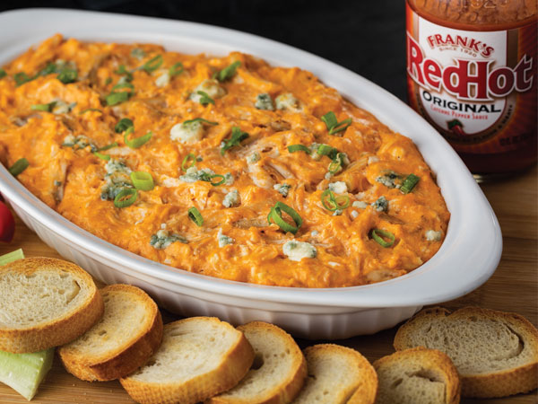

Buffalo Chicken Dip

Description
AMAZING Frank's Red Hot Buffalo Chicken Dip! This is a thick and creamy dip that tastes like buffalo wings, serve it up with some veggies or crackers!
Ingredients
- 1 8oz package of softened cream cheese
- 1/2 cup Frank's Red Hot
- 1/2 cup ranch or blue cheese sals dressing
- 2 cups shredded cooked chciken
- 1/2 cup shredded cheddar cheese
- crackers, veggies, or chips for serving
Directions
- Heat oven 350 degrees
- Combine cream cheese, hot sauce, salad dressing, chicken, and shredded cheese in a 1 quart baking dish
- Bake 20 minutes or until mixture is heated through-out
- Garnish and serve with desired side